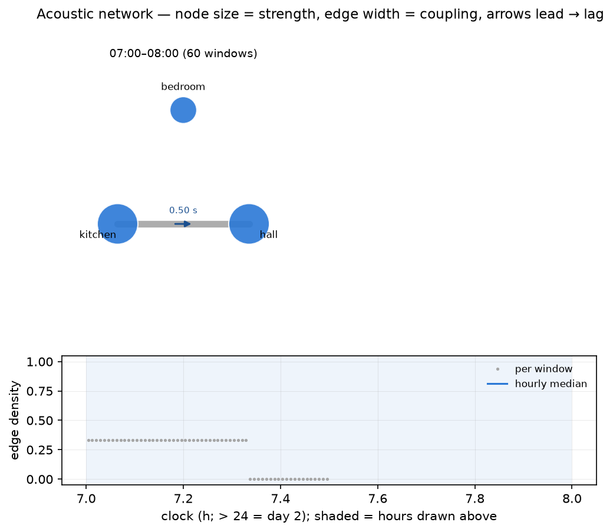

Multi-room acoustic network
Ambisonics puts several capsules at one point and asks from which
direction; an acoustic network puts one recorder in each of several rooms of
a building on a common clock (the SINS deployment style) and asks through
which fabric: how strongly, and with what delay, does activity in one room
appear in the others. The rooms become nodes, the walls, doors and corridors
become edges, and the building reads as a graph whose shape changes over the
day — a closed door thins an edge, a shared ventilation run thickens one, and
the room everything couples to is the acoustic hub. Where
compare aligns visits to one room across occasions, network
aligns rooms within one occasion; where spatial analysis
resolves directions inside a room and a spaced-microphone
array recovers bearings from a few spaced omnis, the network
resolves couplings between rooms.

Everything works from the cached 8 Hz fast A-weighted level streams of a
prior analyze run on each node session; no audio is reopened.
# one analysed session per recorder, all under one folder
ambiscape analyze house/kitchen
ambiscape analyze house/hall
ambiscape analyze house/bedroom
ambiscape network house
# 3 nodes, 214 windows of 120 s
# edge density median 0.33, hub hall (strength 1.12)
# strongest edge kitchen -> hall: coupling 0.78, lag 0.5 s
# wrote house/analysis/network.json and house/analysis/network.png
How it works
- Common grid — every node's fast A-weighted level stream is placed on one uniform 8 Hz clock grid (seconds since midnight of day 0; nodes dated on later days shift by whole days), with NaN where a node has no coverage.
- Pairwise coupling — the grid is cut into non-overlapping windows
(
--win, default 120 s); in each, every pair's mean- and trend-removed dB envelopes are cross-correlated over lags of ±--max-lag(default 4 s) and the peak is kept. That yields a per-window adjacency (coupling) matrix and an antisymmetric lag matrix; positivelag_s[i, j]means room i leads — sound appears there first. - Graph measures (numpy only) — per window: node strength (summed
coupling, the acoustic-hub reading), edge density (fraction of pairs at
or above
--threshold, default 0.35), and transitivity (the closed-triplet clustering indicator). All are also resolved by hour of day, so the graph's daily breathing is visible.
What it produces
network.json— median coupling and lag matrices, per-node strength, the hub, density and transitivity medians, an hourly breakdown, and the strongest pair with its lag.network.png— house graphs at representative hours (the quietest, median and busiest hours by density): node size = strength, edge width = coupling, arrowheads point from the leading room to the lagging one with the lag labelled in seconds; below, edge density across the whole deployment with an hourly median step.net_keys folded into<folder>/analysis/summary.json(created if absent) —net_n_nodes,net_density_median,net_transitivity_median,net_hub_node,net_hub_strength,net_max_coupling,net_max_pair,net_max_lag_s— so the building joins the corpus catalogue as one row.
Reading the graph
- A strong edge with near-zero lag usually means a shared source (ventilation plant, street noise reaching both windows) rather than transmission from room to room.
- A strong edge with a stable lag points at a propagation or causation path: the kitchen's activity heard in the hall half a second later, morning after morning.
- The hub is the room acoustically closest to everything — often the circulation space. If the hub changes by hour, the house has different acoustic centres by day and night.
- Density over the day is a one-line occupancy signature of the whole building: empty houses decouple, activity couples.
Lags are searched over a few seconds because coupling here rides on activity envelopes (events heard in several rooms), not on wavefronts; recorder clock offsets of up to the search range are absorbed into the lag estimate, so start recorders from one clock and treat larger offsets as a capture problem.
Programmatic helpers
ambiscape.network exposes the pieces directly: load_network,
node_grid, pairwise_coupling, graph_measures, hourly_measures,
representative_hours, network_figure, network_summary_keys, and
run_network. See the API reference.